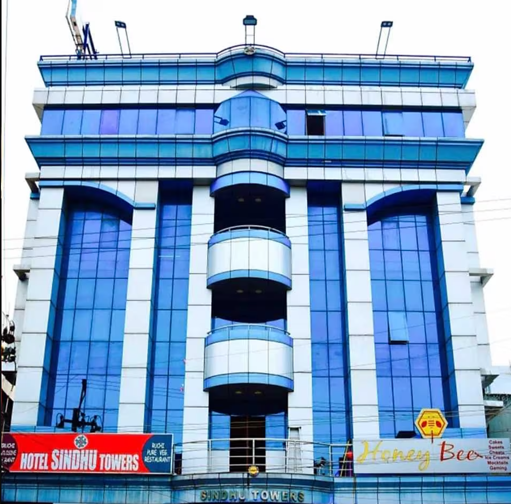

CHITTOOR
HOTEL SINDHU TOWERS

Hotel Sindhu Towers, established in 2005 is a star hotel located at the heart of Chittoor.
It has introduced the concept of fine dining and top of the line lodging & boarding for the first time in Chittoor.
It has also become a popular choice for tourists and visitors to Chittoor. With a wide range of menu options Hotel Sindhu Towers has remained at the forefront of culinary innovations.
In November, 2015, we have opened our newest property 'Honey Bee' to the public.
Honey Bee offers the freshest baked items, delicious Indian sweets, desserts, chaats and more. There is a gaming zone and spacious seating for you to spend some quality time with friends and family.
With the best of class lodging & boarding facilities
it has become the No. 1 choice of stay for travelers on business and/or tourism.
Located at the heart of a city which serves as a hub for several major cities like Tirupathi, Vellore, Bangalore and Chennai, it is the perfect anchor for visitors of every variety.